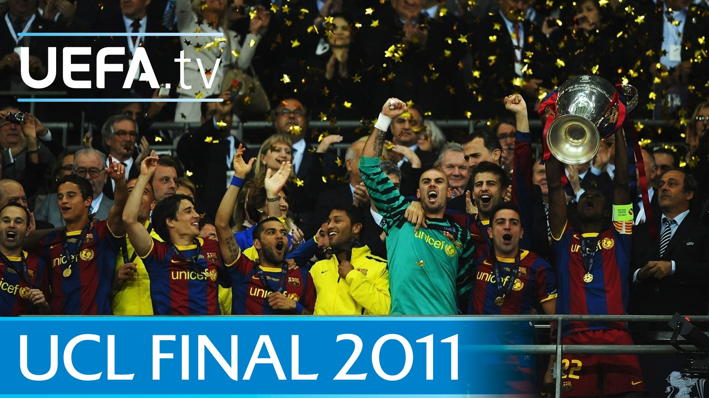
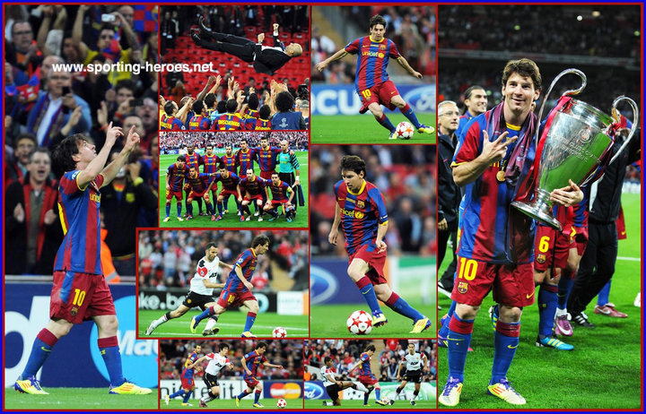
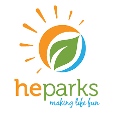
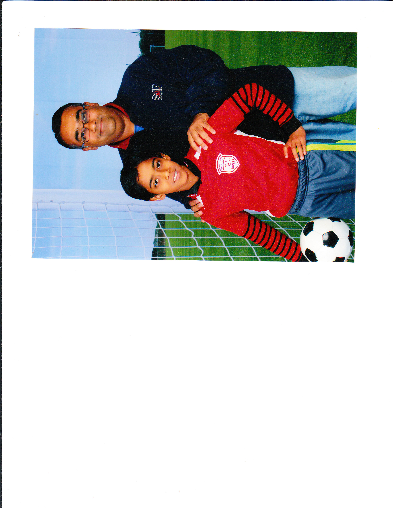
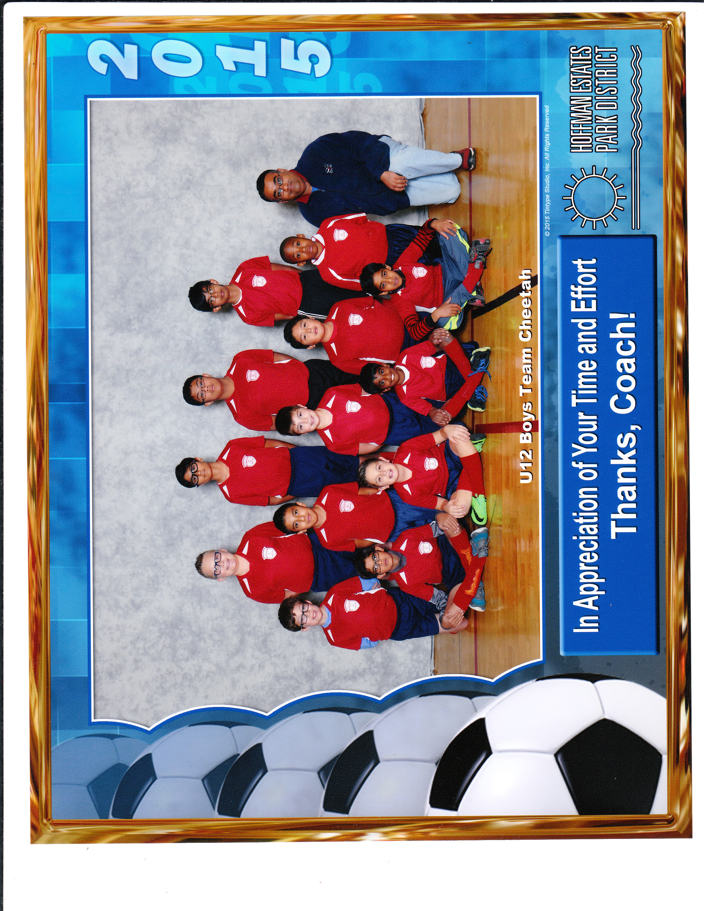
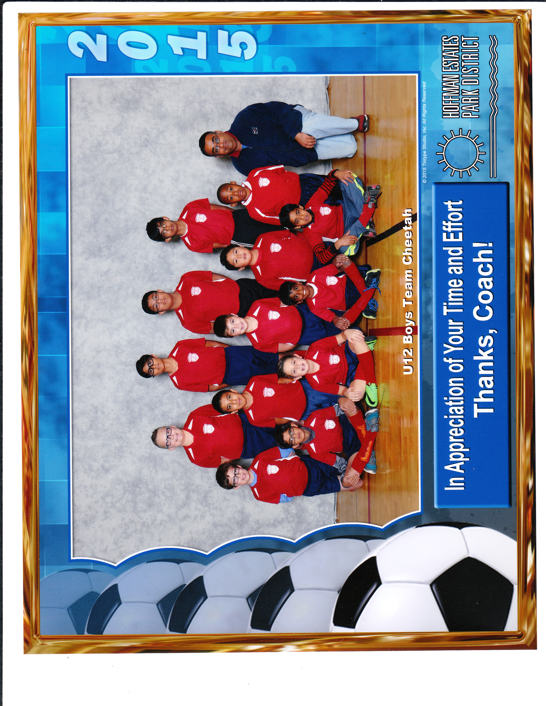
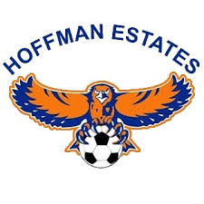

Table of Contents
Introduction
Soccer is my favorite sport, pastime, and stress reliever. Period. I kicked a ball around since I was two, I joined my first team when I was six, and watched the legendary Manchester United take on brilliant Barcelona one summer day in 2011 in the UEFA Champions League Final. Barcelona won, and the sight of Perdo Rodriguez, David Villa, and the sensational Lionel Messi scoring in the final lit my world up. Basketball, football, and baseball were the least of my interests - the beautiful game had stolen my heart.
 
The game which single handed me made me a soccer devotee. Watch how Barcelona, the blue and red team, move the ball so effortlessly for player to player. This game made soccer seem like not just a sport, but an art. The likes of Xavi, Iniesta, and Messi manuevering the ball so effortlessly was simply mesmerizing to me.
Early Years
I joined my first team when I was six years old, when I was in kindergarten. I still remember that I was very shy when I arrived for my first practice. I did not want to play this strange new sport in which you could not use your hands. This seemed very inefficient to me. But by the end of practice, I had broken out of my shell. I loved the feeling of the wind in my hair as I dribbled the ball up the field. I loved the elation, that swoop in the stomach, that accompanied a goal scored. My shyness had evaporated. I was loudly calling for the ball, telling some of my teammates what to do even though we were both new to the sport. When practice ended, my parents had to almost drag me home from the field. I had suddenly found a passion in life - I had discovered my true calling.
I played in the Bloomingdale Park District for one year, building up my soccer skills and learning the nuances of the game. And when we moved to Hoffman Estates in first grade, I joined the Hoffman Estates Park District team and met a man who would change my soccer life forever.
Becoming a Great Player
It was my first day of soccer practice with my new team, and I was feeling a little nervous again. We got to the field, and met Coach Vijay. He seemed like a nice enough guy - he was crisp, proper, and seemed to know what he was doing. I went to the practice nervous, but he set me at ease, allowing me to do what I did best - play soccer. I fit into his team in the following practices, and "Team Ironmen" took the first grade Hoffman Estates Park District League by storm, rarely losing a game. I became great friends with the people on Coach Vijay's team, and some of my old teammeates are on my school soccer team today.
I played with Coach Vijay for a few more years, then went on to play travel soccer with him as well for Hoffman United Soccer Club (HUSC). I had a lot of fun playing with the people I had played with for years, but my parents did not like the high costs of travel and long distances we had to drive to get to away games. In the end, in fourth grade, I stopped playing travel, and returned to Hoffman Park District soccer.
Hoffman Estates Park District, the place where I really developed as a mature soccer player.
I may have played my best soccer during this time in my life. My father became my soccer coach, and worked hard with me to improve me as a player and a leader on the pitch. I increased my speed and ball control skills, and worked hard on the pitch to reach my optimal strength. My teammates were new to me - unlike my HUSC teammates, I had not played with them before. But we quickly learned each other's strengths and even became friends. Some of my best friends from elementary school were on that team, and we gelled very nicely as a team. We performed well in the Intervillage League, even beating my personal rivals Bloomigdale in the process. My best season was in sixth grade (which was also my final season with Hoffman Estates), where I scored 18 goals in an 11-game season. I was in the form of my life, and soccer was becoming my life and love.

 

My favorite team that I had ever played with - Team Cheetahs from Hoffman Estates Park District. Whether we won or lost, we always stuck together. These pictures were taken during my breakout season, where I scored 19 goals and really grew in confidence as a soccer player.
Then, in seventh grade, we switched to SAA - Schaumburg Athletic Association - to play our soccer in. I was really dejected at first: I was leaving behind friends who I had played with for the past two years. But I quickly focused on playing my best in another different league. My personal record for my first year in SAA was nothing to brag about - only seven goals across two seasons (19 games) - but we won the SAA spring tournament - it was really the first tournament I had won in soccer, and it made me feel incredibly proud - especially since we beat the other team 5-0 in the final with me bagging a goal and an assist. The 2016-17 season had ended on a high, and I couldn't wait for the next season to begin.


Our triumphant team in the SAA spring tournament. I had finally won a competition in soccer, and I felt joy like I had never felt before during that winning moment.
My 2017-18 SAA soccer season was decent for me too. I scored 15 goals, and even though we did not win the tournament, we still played hard and it was a good season for me personally. It was also my last season for playing park district soccer - if I wanted to continue to play the sport I loved, then I would have to make the high school team.
High school Soccer
My soccer journey was now nearing its end. I had played soccer for eight years, or 16 seasons. I could only play four more years of soccer, maximum, but only if I was good enough. This is where the pressure began - to make the high school Freshman A Team.
For me, the goal was always to make Freshman A. I felt that I had spent too much time practicing in the soccer pitch, kicking the ball into the goal and trying out new moves for hours after my friends had given up and gone home. I wanted to be part of the Freshman A team as a sort of tribute to my hard work from the past eigth years of playing.
I attended soccer camp to meet with some of my future freshmen teammates, and to scout out the competition. I practiced hard in soccer camp, knowing that I would have to fight for a place in the team against the people I was practicing with.
When tryouts arrived, I was calm. I had been in several "first practices"/tryouts situations before, and I knew that being flustered would not help me at all. Tryouts were for four days, and that was plenty of time to show the coaches why I belonged on that Freshman A team. At first, we did basic drills: passing, dribbling, shooting, the easy stuff. Then, we progressed into game scenarios: keep away, one v ones with the keeper, and even more passing and ball control drills. I tried my hardest at every drill, and hoped that the coaches would notice my efforts.
Finally, it was the last day of tryouts. I still remember that day clearly. The ones who were not part of the team did not even bother to show up - the serious kids were the only ones left. We did some basic drills, and then did a scrimmage. I was on the same team as my old HUSC teammates, and we passed the ball well, manuevering through the oppposition as if they were mannequins. I gave it everything I had left in the tank - and after four days straight of gruelling soccer, I did not have much left in me.
Finally, tryouts ended. The coaches took us inside the school, to a quiet hallway, and made us line up against the wall. The coach then read out a speech about how hard we had worked during tryouts and how everyone deserves to be on the team, and the usual - but I was too nervous to listen. Then the coach began to read the names of those who had made Freshman A. You could hear a pin drop - it was that quiet. After a name was called, we all clapped respectfully to congratulate him. My heart was thumping, as the coach kept calling names which weren't mine. Finally, he seemed to pause. "A-a-nand?" I breathed a sigh of relief - not my usual reaction when someone is struggling with pronouncing my name. The coach made eye contact with me and smiled. I grinned with happiness - I had achieved my goal! I was part of the Hoffman Estates High School Freshman A team!
The rest of the day passed by like a blur. Nothing could have put me down that day. I had become what I had worked towards for eight years. But my soccer story isn't over yet. Making the freshman team is not enough. We have to win our games, and to win the Freshman Cup for me to truly achieve my goals for this season. And who knows? Maybe I could make Varsity next season!
I dedicate this webpage to my father, and all of my other coaches, who have molded me into the player I am today. Thank you, and I will always remember what you all have done to make me a great player.